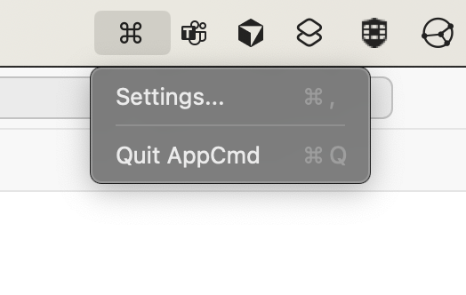

AppCmd
The fastest way to switch application windows on macOS :)

Quick Installation
📜 Visual Cheat Sheet
Can't remember your shortcuts? Just hold the Right Command key for a moment to reveal all your custom assignments in an elegant grid.

🎯 Muscle Memory
Assign 'A' to Arc, 'S' to Safari, or 'O' for Outlook. Your most important apps are always exactly one key away.

🎨 Modern Aesthetics
Designed to feel like a native part of macOS. Translucent materials, smooth animations, and zero configuration required to start.
